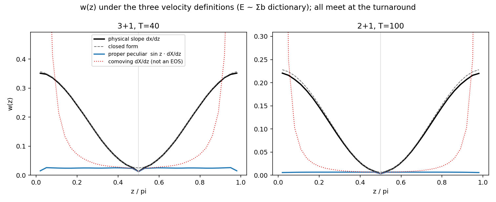

One equation of state, three velocities: the U-shape belongs to the
Hubble flow, the peculiar temperature is nearly a constant of the
cycle
New analysis analysis/analyze_eos_speeds.py (commit
94b652b),
run on the stored FULLSUB dumps: 3+1 T=40 and 2+1 T=100, 8 seeds
each pooled, subpaths included, standard E ~ Σb
dictionary. Question from Kevin: the codebase carries three related
speeds — the w-dictionary's physical slope dx/dz, the proper
peculiar speed sin z·dX/dz, and the comoving coordinate
rate dX/dz — what does the equation of state look like under
the other two, and is one of them unusable?
All three agree exactly at the turnaround.
cos(π/2) = 0 kills the Hubble term and sin(π/2) = 1
collapses the definitions onto each other: measured turnaround
w = 0.01259 / 0.00333 under every definition, in both
dimensions. The dust law w = d/(6T) is
velocity-definition-independent — another layer of armor
on the headline number.
The comoving speed cannot make an equation of state
— confirmed and quantified. Per axis dX/dz =
v_pec/sin z, so its “w” is exactly the peculiar w
divided by sin²z: chart-dependent, unbounded by c, and
diverging at the Bang and Crunch as a pure coordinate artifact
(the dotted curve leaves the top of the panel). Kevin's
suspicion was right: this one is not usable.
The proper peculiar w(z) IS a legitimate EOS —
and it is nearly flat. The genuinely new measurement:
strip the Hubble-recession term and the matter's
peculiar-motion temperature barely changes across the whole
cycle — an almost-constant w ≈ 2×
the turnaround value, with a narrow cold notch exactly at
π/2 (where the wiggle displacement–velocity
correlation vanishes) and a droop at the extreme endpoints.
The familiar radiation-like U-shape of the published w(z) is
carried ENTIRELY by the anchors' Hubble flow: the standard
dictionary reads the expansion itself as pressure away from
the turnaround, while the matter underneath stays kinetically
cold and steady from bang to crunch.

w(z) under the three velocity definitions, subpaths included.
Black: physical slope (standard dictionary) with the closed form
dashed; blue: proper peculiar — near-constant; red dotted:
comoving coordinate rate — the 1/sin²z coordinate
pathology, not an EOS. All meet at π/2.
Viewer companion: the box viewer now paints all three speeds
(box3d-v5 adds Physical slope (w dictionary) next to the
comoving and proper-peculiar modes added earlier), so the
decomposition in this figure can be watched point-by-point on a
live packing. PHYSICS_FINDINGS.md §18 records
the result.
Viewer changelogs: the version history of all four visualizers,
reconstructed from the commit log
Housekeeping (Kevin's request): the viewers carry a
VIEWER_VERSION stamp bumped on every commit, but the
what-changed-when history lived only in commit messages. This entry
is the consolidated changelog; from here on, every version bump gets
a line in that day's lab note. Each version links its commit.
3+1 comoving box — threeplusone_box.html
box3d-v1 · 2026-08-06 ·
first 3+1 visualizer: comoving (X,Y,W) slice as instanced
shader-evaluated points in the period-2 box, CSV import, bundled
T=40 fullspec example
(0dbd7df)
box3d-v3 · 2026-08-06 ·
ghost images: the 26 periodic neighbour cells as a fading fog
band past every wrap seam, reach/depth/fade controls, outer band
wireframe, minimap fog tiling
(0d32d14)
box3d-v4 · 2026-08-06 ·
proper-peculiar-speed paint mode (sin z × comoving rate,
own normalization ranges)
(25f261b)
box3d-v5 · 2026-08-08 ·
physical-slope (w-dictionary) paint mode — all three EOS
speeds paintable
(bc59b58)
Born 2026-07-01 as the toroidal fork of the original hard-wall
viewer (e730a99);
version-stamped since 07-04. Highlights by era (v9/v13 left no
surviving commit — folded into neighbours):
v18–v21 · 07-09 to 07-12 ·
canonical engine z grid, Chebyshev peculiar-speed paint,
fullscreen + playback settings, scrub-window [min,max]×π
(121dbd6…cf36f52)
v22–v33 · 07-15 to 07-18 ·
the reference-frame era: observer past-light-cone map, front
laws (speed scalar / fit / wiggle-budget), aberration fix,
frame painted on slice and torus, frame-torus mode
(e8753b1…8271a1c)
v34–v37 · 07-24 · frame
animations: one or two observers side by side, particle
tagging, WebM/PNG export, static comoving-point observers
(380f97c…f68460a)
v38 · 2026-08-08 · proper-peculiar
and physical-slope paint modes ported back from box3d-v5 —
all three EOS speeds paintable in 2+1
(8f5fa12)
2+1 braid view — twoplusone_braids.html
braid v1–v4 · 2026-07-20 ·
worldlines as 3D strands (column + ring closure), future
dimming + census closure arcs + per-component colours,
one-sided seam mode, sin1-pin and full-band experiment toggles
(bf59537…1d7afe9)
2+1 squeeze fork — twoplusone_2torus_squeeze.html
squeeze-v1 · 2026-07-11 · fork of
wrapped v19 for the k × 1/k cell-deformation experiment;
tracks the wrapped viewer loosely
(11633eb)